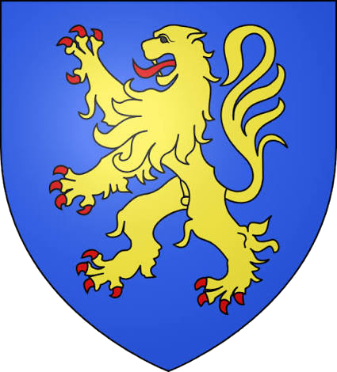
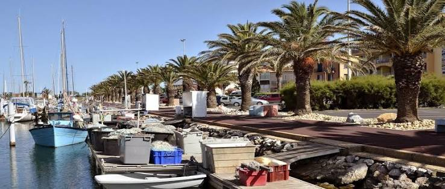
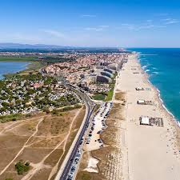

Canet-en
Roussillon
Entre étang et
Méditerranée


⟹ Village catalan · Étang · Grande plage ⟸

Un site ancien entre plaine et mer. Canet-en-Roussillon s’est développé au centre de la plaine du Roussillon, à proximité de l’embouchure de la Têt et d’un vaste système lagunaire. Cette position, tournée à la fois vers les terres agricoles, la mer et les voies de circulation du Roussillon, explique l’ancienneté de l’occupation humaine et la vocation d’échanges du site.
Le noyau médiéval du “castell”. Au Moyen Âge, la population se regroupe autour d’un château vicomtal et d’un ensemble fortifié. Le château de Canet occupe une position stratégique et intervient dans les rivalités entre les couronnes d’Aragon, de Majorque et de France. Il accueille notamment des personnages de premier plan, dont l’empereur Sigismond en 1415 lors des négociations liées au Grand Schisme d’Occident.
Le château vicomtal. Le château, aujourd’hui en ruines consolidées, conserve des vestiges de ses enceintes, de la chapelle Saint-Martin et d’aménagements successifs. Affaibli après le rattachement du Roussillon à la France en 1659, il perd progressivement sa fonction militaire. Sa sauvegarde est engagée au XXe siècle et la commune en devient pleinement propriétaire en 2024.

Saint-Jacques et la vie du vieux village. L’église Saint-Jacques devient le cœur religieux du bourg. Autour d’elle, les ruelles, placettes et maisons du vieux Canet gardent la lecture d’un village catalan longtemps tourné vers l’agriculture, la vigne, l’élevage, les métiers artisanaux et les échanges avec Perpignan.
Un territoire de pêcheurs. Au sud de la commune, l’étang de Canet–Saint-Nazaire a longtemps nourri une activité de pêche traditionnelle. Les cabanes de pêcheurs en roseaux rappellent ce mode de vie ancien et constituent aujourd’hui l’un des paysages patrimoniaux les plus singuliers du littoral roussillonnais.
La naissance de Canet-Plage. À partir de la fin du XIXe siècle et surtout au XXe siècle, la fréquentation balnéaire transforme profondément la commune. Les bains de mer, les transports depuis Perpignan, puis l’automobile favorisent l’urbanisation du front de mer. Canet devient progressivement l’une des grandes stations du littoral catalan.
Deux visages complémentaires. La commune conserve aujourd’hui une identité double : Canet-Village, autour du noyau historique, et Canet-Plage, ouverte sur une longue plage de sable, un port de plaisance et des équipements touristiques. Entre les deux, les quartiers modernes assurent la continuité urbaine.

Un patrimoine naturel majeur. L’étang de Canet–Saint-Nazaire est protégé au titre de Natura 2000 et appartient en grande partie au Conservatoire du littoral. Roselières, sansouires, zones humides et plans d’eau accueillent de nombreuses espèces d’oiseaux, notamment des flamants roses, aigrettes, sternes et limicoles.
Canet aujourd’hui. La ville associe station balnéaire, port, vieux village, patrimoine médiéval et espaces naturels. Cette diversité en fait une porte d’entrée idéale pour comprendre les contrastes du littoral roussillonnais : plage aménagée, lagune protégée, culture catalane et arrière-pays agricole.
Pour approfondir : Ville de Canet — Château vicomtal · Ville de Canet — Étang et village de pêcheurs · Ville de Canet — Marchés.
Les pêcheurs de l’étang ont façonné une part essentielle de l’identité de Canet. Leurs techniques, leurs cabanes en roseaux et leur connaissance du milieu lagunaire constituent un patrimoine culturel aussi important que les monuments du vieux village.
Le patrimoine local conserve également la mémoire des vicomtes de Canet et des grandes figures ayant séjourné au château, notamment l’empereur Sigismond en 1415.
Accès : Canet-en-Roussillon se rejoint surtout par la route depuis Perpignan en une quinzaine de minutes environ. Des lignes de bus du réseau Sankéo relient également la commune à l’agglomération.
Office de tourisme : Canet Tourisme accueille les visiteurs à Canet-Plage et renseigne sur les visites du village, de l’étang et les animations saisonnières.
Marchés : plusieurs marchés ont lieu toute l’année : Canet-Plage les mardi, jeudi, samedi et dimanche ; le village les mercredi et samedi ; Canet-Sud les lundi et vendredi, avec des compléments saisonniers en été.